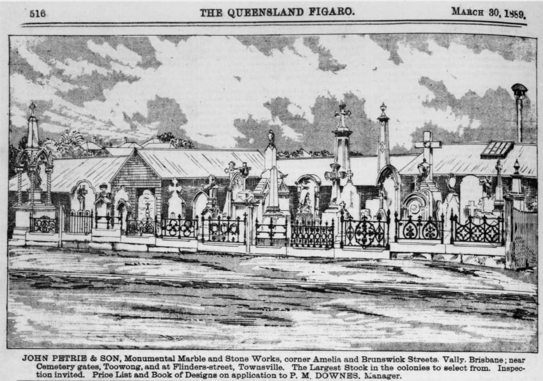

Undertakers

John Hislop Undertakers, Brisbane, ca. 1902, held by John Oxley Library, State Library of Queensland
George Barney Petrie (13‑5‑3)
George Barney Petrie was born in 1839 at the Moreton Bay settlement, the youngest son of Andrew Petrie and his wife Mary, née Cuthbertson. His family arrived in Sydney in 1831 and in 1837 his father was appointed clerk of works at Moreton Bay penal settlement. The family stayed on in the district after it closed.
After learning the ropes in the family building and contracting business George assumed responsibility for the carpentry side of the business from his eldest brother John. Typical of the period, coffins were made in the carpentry workshop which expanded to encompass all aspects of the undertaking trade.
The Petrie family had arranged burials since 1840 but it wasn’t until 1864 that George Barney Petrie started to conduct funerals under his own name including that of Queensland’s second Governor, Colonel Samuel Wensley Blackall on 3 January 1871. George died on 21 June 1878 of ‘fits’ and was buried the same day.

Advertisement and etching for John Petrie & Sons, stonemasons in Brisbane, 1889 - State Library of Queensland
Alex Gow (13‑59‑3/4)
Alexander Gow was born in Fife, Scotland, on 19 October 1861 son of James Gow and Christian Philp. In 1865, he arrived in Brisbane where his father operated a grocery store. Alex Gow trained as a compositor and worked in the printing trade. On 24 March 1884 at her parents’ home in New Farm, he married Mary Inglis Mathewson. There were seven children from the marriage.
In 1908 he purchased the interest of George Sillett in the undertaking firm Sillett and Barrett. Within two years, Alex Gow had total control of the firm and had started conducting funerals under his own name. He died on 2 May 1919 of gastric carcinoma. In keeping with the tradition of undertaking firms not conducting funerals for members of their own family, his funeral was arranged by John Hislop and Sons, which operated from two doors down from Alex Gow’s premises in Queen Street.
Alex Gow Funerals, now operated by the fourth generation of the family, moved to its current site in Newstead in 1963 when the traffic in Queen Street made it too difficult to conduct funerals and assemble corteges from the old site.

Alex Gow Undertaker's premises at 550 Queen Street, Brisbane, Queensland. Men from left to right: Alexander Gow, Robert Alexander (Bert) Gow; Thomas Learoyd. The business was first owned by Alistair Gow - John Oxley Library, State Library of Queensland.
John Hislop (11‑68‑9)
John Hislop along with his brother James, were prize-winning furniture manufacturers and upholsterers with premises in Queen Street. They also conducted funerals together from the 1870s. This partnership was dissolved in 1889 with the funeral and furniture businesses being separated with the bulk of the funerary business being conducted from Peel Street, South Brisbane.
John Hislop and Sons established another branch at 544 Queen Street in 1912 where he and his three sons, daughter and son-in-law conducted business until the 1950s when the Queen Street traffic forced them to consolidate the business at Peel Street.
John Hislop died on 15 July 1918 aged 74 after a long and painful illness. His funeral left the same day from his residence Norman Villa at Norman Park. The funeral was conducted by Cannon and Cripps.

John Hislop Undertakers in a funeral procession in Brisbane, ca. 1892, held by John Oxley Library, State Library of Queensland. It is believed the procession is in Sylvan Road (previously Cemetery Road) on corner of Kate Street.
Alma Adlington (7‑114‑5)
Alma Adlington was born in Rotherhithe, near London in 1856, the son of a boat builder. He described himself as a cabinet maker at the time of his marriage to Mary Gascoyne at Bromley, Kent in January 1883. With their infant son, the Adlingtons arrived in Brisbane in December 1884. Two more children followed. Alma worked as a cabinet maker and upholster, his projects including the hangings behind the high altar of St Stephen’s Cathedral. He also patented in 1890, a combined horse-drawn carriage and hearse in which the coffin was stowed under the floor.
In early 1891, he went into business with established undertaker George Sillett. The partnership was short lived as Alma died on 4 May 1891 aged 36. George Sillett buried his partner and two weeks later he buried Mary Adlington, who had died of a ‘broken heart’ at the loss of her husband. The three orphaned children were cared for by their aunt.
George Sillett (5‑65‑9)
George Sillett was born in Durham in the north of England in 1866. He arrived in Brisbane in December 1885. A little under a year later he married Durham lass, Margaret Ann Gill at All Saint’s Church of England, Ann Street. At the time, George Sillett was managing Petrie’s Undertaking Establishment at 550 Queen Street.
After the short lived partnership with Alma Adlington, George Sillett went into business with Walter Scott Barrett, the son of undertaker Walter Barrett. From 1893, the firm Sillett and Barrett traded from Petrie Bight with a branch office at Roma Street.
Alexander Gow purchased an interest in the firm on the death of George Sillett, aged 42, from influenza exacerbated by heavy drinking on 7 September 1908. He had been a prominent member of the Grand United Order of Oddfellows which is symbolised on his headstone by the two male hands clasped.
Walter Barrett (1‑31‑7/8)
Walter Barrett was born in July 1833 in Taunton, Somerset, son of a veterinary surgeon. He married Matilda Webber on 30 March 1864 and set sail for Australia. He established his undertaking business in 1875 and bought a tiny six and a half perches block two doors down from the Hotel Orient which was designated the number 550 Queen Street.
He took over the business of the late George Barney Petrie in 1878 and traded as the Petrie’s Undertaking Establishment. Walter Barrett sold the business in 1884 to William Hancock and John Corbett who continued using the name occasionally supplemented with their own.
Walter Barrett then went to Sandgate where he became an alderman and served as mayor for the year of 1891. He died at Eagle Junction on 11 December 1907 aged 74 after a long and painful illness.
Kate Mary Smith (1‑7‑14)
Kate Mary Smith, giving her name to the KM Smith Funerals, was a true pioneer in an era when women pursued domestic duties or worked in service or in factories. Born in Ireland in 1847 as Catherine Mary Farrell, she immigrated to Australia with her brother in the 1860s. Kate Farrell is believed to have worked for the Jardine family on Cape York. Certainly she was at Somerset on 27 January 1868 when she married Marine John Smith at the Registrar’s Office. Their marriage certificate shows John was 29, and a piano forte maker like his father; Kate was 21 and described herself as a servant.
Kate Mary, a Catholic, and her Anglican husband John, arrived in Brisbane in 1874. Through their respective churches and his Freemasonry, they were able to make extensive social and business connections, despite living in poor circumstances themselves. John often applied his cabinet making and carpentry skills to produce coffins, subsequently becoming an undertaker. They lived in Peel Street, South Brisbane, and later at Manning Street, and bought the undertaking business of William Walsh in 1883. They operated for many years from George Street, just near the old Lands Department, and they competed for business with other undertakers such as Walter Barrett and the Hislops. Two years later John Smith was dealing with his solicitors about leasing land at the corner of Wickham and Gotha Streets, below the steep hill crowned by All Hallows.
On 11 January 1886, the Smith family moved from South Brisbane to the Valley where they lived in the upper storey, above the business. Nearby were the very necessary stables, housing the hearses and the black horses that drew them. It was a many-faceted business, and they were on call day and night. But Kate Mary's husband was ill, suffering from consumption, and weakened by an attack on the Marines at Somerset in 1864 in which he had suffered two spear wounds, serious enough for him to have been sent to Sydney for some months. A few months later he died, at Wickham Street, aged 42, and was buried by a Church of England minister at Toowong on 20 May 1886. Kate Mary had run the business for some time already, assisted by her eldest son, John. She had learned how to embalm, a necessary skill to enable the transportation of bodies, but a rare one for a woman to master. This was especially remarkable as women of the time rarely attended funerals let alone work in the industry. She closely monitored all aspects of its operations and insisted on quality service.
The company continued to develop as times changed, and was an early mover from horse drawn hearses to motor vehicles completing the process in 1932. Kate Mary was a generous supporter of the church and the Mater hospital. Strong and determined, she has been described as a feisty woman who did not suffer fools gladly. These qualities saw the company flourish, despite the hardships of World War One and the depression. Personal tragedy also continued to strike, by the time of her death in June 1932 aged 85, Kate Mary had buried four of her six children.

Looking from Centenary Place across Gotha St, Fortitude Valley towards K.M. Smith Funeral Directors - State Library Queensland.
Alfred Cannon (4‑1‑21/22) and Joseph Cripps (4‑28‑6)
Cannon and Cripps was formed in 1887 by Alfred Cannon and his brother-in-law Joseph Cripps.
Joseph Cripps was born in Waddeson near Aylesbury, Buckinghamshire in 1849. He arrived in Queensland aboard the Ramsey in June 1873. Initially he lived in Ipswich before moving to Brisbane. After nine years in various businesses, he became an undertaker. He died after thirty one years in the profession aged 69 on 15 January 1918 after an illness of six weeks. The funeral, conducted by John Hislops and Sons, left his late residence Iona, Heussler Terrace, Milton and he was buried with the rites of the Methodist Church of which he had been a trustee for many years. He was also a prominent member of the Protestant Alliance Friendly Society of Australia and sympathised with the ideals of the Loyal Orange Lodge. Joseph Cripps had outlived his partner Alfred Cannon by three years and had gone into business with his nephew William Cannon.
Alfred Cannon died on 11 September 1915 aged 71 at his home Airlie, Edmondstone, South Brisbane. He shared the same political affiliations and lodge memberships as his brother-in- law. Alfred had married Joseph’s sister Sarah Cripps on Christmas Eve 1862 in Waddeson, the same village they had both been born and the couple joined Joseph on his voyage to Queensland.

Flyer for Cannon and Cripps, Undertakers in Brisbane, Queensland, 1902 - State Library of Queensland.
Further Reading
- Maclean, H. 2012, The Undertakers’ Picnic in England, M. (comp.) Toowong 1863 – 2011. Toowong, Qld. Toowong History Group
- Nolan, C. 2009, A family undertaking: Alex Gow Funerals The history of a funeral business 1840-2009. Newstead, Qld. Alex Gow Pty Ltd.
Acknowledgements
Thank you to Laurel Shanley from K. M. Smith Funerals for providing the story of Kate Mary Smith